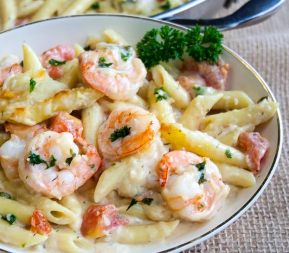

Garlic Shrimp Pasta

Description
This shrimp casserole with noodles is quick and easy.
With shrimp and pasta coated in a creamy herb sauce,
this seafood pasta bake is a meal the whole family will love.
Ingredients
- 1 (10 ounce) package penne pasta
- 3 tablespoons butter, divided
- 1 teaspoon vegetable oil
- 1 pound uncooked medium shrimp, peeled and deveined
- 3 tablespoons chopped fresh parsley, divided
- 2 teaspoons chopped fresh dill
- 2 tablespoons all-purpose flour
- ½ cup chicken broth
- 1 cup milk
- 2 large tomatoes, chopped
- 1 tablespoon lemon juice
- 1 teaspoon salt
- 1 teaspoon ground black pepper
- ¾ cup grated Parmesan cheese
- ½ cup grated Romano cheese
- ¼ cup shredded mozzarella cheese
Steps
- Preheat the oven to 350 degrees F (175 degrees C).
- Bring a large pot of lightly salted water to a boil.
Add penne and cook, stirring occasionally, until tender yet firm to the bite, about 11 minutes.
Drain and set aside until needed.
- While the pasta is cooking, heat 1 tablespoon butter and oil in a large oven-safe skillet over medium heat.
Add garlic and cook until fragrant, about 30 seconds.
Add shrimp, 2 tablespoons parsley, and dill;
cook until shrimp are bright pink on the outside and the meat is opaque, 1 1/2 to 2 minutes per side.
Transfer shrimp to a plate, leaving any cooking juices in the pan.
- Melt remaining 2 tablespoons butter in the skillet over medium heat.
Whisk in flour until fully combined and starting to turn golden, 30 seconds to 1 minute.
Whisk in chicken broth until combined, then repeat with milk.
Stir in tomatoes, lemon juice, salt, and pepper; bring to a simmer.
- Add 1/2 cup Parmesan and Romano; stir until cheeses begin to melt and sauce is creamy.
Add 1 tablespoon mozzarella cheese, then mix in 1/2 of the cooked pasta.
Add more pasta if there is enough sauce to coat it. Stir in shrimp,
then top with remaining mozzarella, Parmesan, and parsley.
- Bake in the preheated oven until golden on top and bubbling around the edges, 8 to 10 minutes.